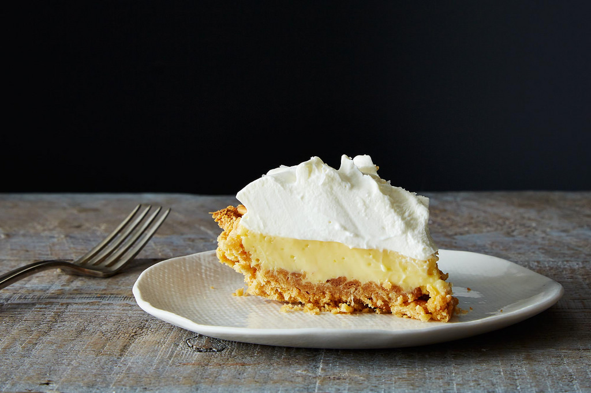

A sweet-salty twist on a classic North Carolina lemon pie that's as lazy and beachy as summer should be.
ingredients
For the crust:
1 1/2 sleeves of saltine crackers (about 6 ounces or 60 crackers)
1/2 cup softened unsalted butter
3 tablespoons sugar
For the filling:
One 14-ounce can sweetened condensed milk
4 egg yolks
1/2 cup lemon or lime juice or a mix of the two
Fresh whipped cream, for garnish
Coarse sea salt, for garnish
preparation
Preheat oven to 350° F.
Crush the crackers finely, but not to dust. You can use a food processor or your hands. Add the sugar, then knead in the butter until the crumbs hold together like dough. Press into an 8-inch pie pan. Chill for 15 minutes, then bake for 18 minutes or until the crust is golden brown.
While the crust is cooling (it doesn't need to be cold), beat the egg yolks into the milk, then beat in the citrus juice. It is important to completely combine these ingredients. Pour into the shell and bake for 16 minutes until the filling has set.
The pie needs to be completely cold to be sliced. Serve with fresh whipped cream and a sprinkling of sea salt.